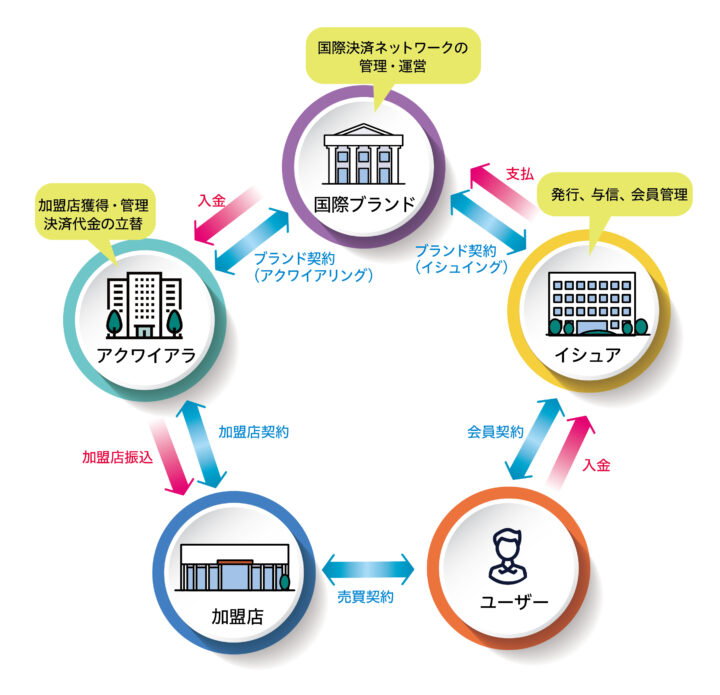

私たちの日常にすっかり溶け込んだキャッシュレス決済。経済産業省によると２０２４年の国内のキャッシュレス決済額は141兆円で、そのうち116.9兆円はクレジットカード決済額によるもの。つまり、日本のキャッシュレス決済額の大部分はクレジットカード決済が担っているのです。
出典：経済産業省プレスリリース、「2024年のキャッシュレス決済比率を算出しました」、２０２５年３月３１日
クレジットカード決済がここまで広く浸透した背景には、小売店やECサイトなどのカード加盟店（以下、加盟店）が、カード決済を安全かつスムーズに処理できるようにする仕組みが存在しています。そこで中心的な役割を担っているのが、「マーチャントアクワイアラ（merchant acquirer）」または単に「アクワイアラ（acquirer）」と呼ばれる事業者たちです。
今回は、日本のキャッシュレス化を支えるアクワイアラとアクワイアリング市場を理解するための基礎知識をまとめてみました。
アクワイアラとは
消費者が加盟店でクレジットカードを使った際、その取引を円滑に処理し、加盟店への代金支払いを実行するのがアクワイアラの主な役割です。アクワイアラは、取引データをとりまとめ、加盟店手数料を差し引いた金額を所定のサイクルで加盟店に入金します。その後、これらの代金についてカード発行会社（イシュア）と精算します。このように、カード決済における加盟店側の処理を担っているのがアクワイアラで、消費者側の処理を担っているのがイシュアであると理解するとよいでしょう。キャッシュレス決済が日常の様々な場面に浸透していく中、アクワイアラの役割はますます重要になっています。

▲クレジットカード取引を構成する「5パーティモデル」（インサイト記事「決済センター の役割解説①：クレジットカード取引を構成する『5パーティモデル』」から転載）
クレジットカード取引をもっと詳しく知るための関連記事：
- 「決済センター の役割解説①：クレジットカード取引を構成する「5パーティモデル」」、２０２４年８月２７日
- 「決済センター の役割解説②：クレジットカードの取引フローを考える」、２０２４年８月２９日
なお、「マーチャントアクワイアラ」や「アクワイアラ」は本来はカード決済業界の用語で、もともとは「カード加盟契約獲得会社」という意味です。現在はカード決済以外にも電子マネーやコード決済など様々なキャッシュレス決済手段がありますが、この記事ではカード決済に絞って解説していきます。
どんな会社がアクワイアリングをしている？
国内アクワイアリング市場についてまず知るべきことは、どんな会社がアクワイアラをやっており、それが何社あるのか、でしょう。JCBブランドの場合はJCB自身がアクワイアラですのでわかりやすいですが、VisaとMastercardの場合はどちらもアクワイアラ業務は行っておらず、ライセンスを持ったパートナー企業がアクワイアリング事業を行っています。幸い、VisaもMastercardもアクワイアラ一覧をWeb上に公開していますので、どんな会社がアクワイアラをやっているのか確認することができます。
- Visa アクワイアラ一覧（https://www.visa.co.jp/run-your-business/accept-visa-payments/acquirers.html）2025年6月12日アクセス
- Mastercardアクワイアラ一覧（https://www.mastercard.co.jp/ja-jp/business/merchants/acquirer-contact-info.html）2025年6月12日アクセス
国内のVisaアクワイアラとして32社が記載されていますが、そのうちSMBCファイナンスサービス株式会社は同じくVisaアクワイアラである三井住友カードと合併したため、実際は31社ということになります。また、イオンクレジットサービス株式会社はイオンフィナンシャルサービス株式会社に吸収合併されており、アクワイアリング事業はイオンファイナンシャルが継承していると考えられます。
Mastercardアクワイアラは13社が記載されています。そのうちMastercardアクワイアラ13社はVisaアクワイアラでもある（※）ので、両ブランドのアクワイアラは合計31社ということになります。
（※）イオンフィナンシャルサービス株式会社はMastercardのアクワイアラ一覧に記載されていますが、Visaアクワイアラ一覧には記載されていません。しかしVisaアクワイアラであったイオンクレジットサービスを吸収合併しているため、Visaアクワイアラでもあると考えます。
それでは、31社のアクワイアラを4つのグループに分けて簡単に紹介していきます。
Visa・Mastercardアクワイアラ31社の一覧
31社をただ列挙してもわかりにくいため、ここでは各社の事業内容や歴史的経緯を踏まえた４つのグループに分類して紹介します。
銀行または銀行系カード会社
銀行、または銀行によって設立されたカード会社や団体です。
- GMOあおぞらネット銀行株式会社：GMOインターネットグループとあおぞら銀行グループが共同で設立したインターネット専業銀行。
- 静岡銀行：静岡県に本店を置く地方銀行。
- 住信SBIネット銀行株式会社：SBIホールディングスと三井住友信託銀行が共同で設立したインターネット専業銀行。2025年5月、NTTドコモが子会社化することを発表した。
- 株式会社千葉銀行：千葉県に本店を置く地方銀行。
- VJA：銀行、信託銀行、信用金庫、外国銀行など全国の銀行系カード各社が加盟している企業連合。
- 株式会社北國銀行：石川県に本店を置く地方銀行。
- 三井住友カード株式会社：三井住友フィナンシャルグループのカード会社。
- 三菱UFJニコス株式会社：三菱UFJフィナンシャル・グループのカード会社。
- ユーシーカード株式会社：みずほ銀行系のカード会社。
- 株式会社りそな銀行：りそなホールディングス傘下の大手銀行。
- 株式会社琉球銀行：沖縄県に本店を置く地方銀行。
金融系カード会社
信販会社や、消費者金融会社系列のカード会社です。
- 株式会社アプラス：SBI新生銀行グループの信販会社。
- 株式会社オリエントコーポレーション：「オリコ」の愛称で知られる信販会社。
- 株式会社ジャックス：三菱UFJフィナンシャル・グループの信販会社。
- ライフカード株式会社：アイフルグループのカード会社。
事業者系アクワイアラ
小売・通信・ネットサービスなど、金融以外の事業を母体とする事業者や、その関連会社として発展してきた事業者です。
- イオンフィナンシャルサービス株式会社：イオングループの総合金融事業会社。
- SBペイメントサービス株式会社：ソフトバンクグループの決済代行会社。
- NTTファイナンス株式会社：NTTグループの金融会社。
- 株式会社エポスカード：丸井グループのカード会社。
- 株式会社エムアイカード：三越伊勢丹グループのカード会社。
- 株式会社クレディセゾン：流通系クレジットカードの老舗。
- JFRカード株式会社：J.フロントリテイリンググループのカード会社。
- トヨタファイナンス株式会社：トヨタグループの金融事業会社。
- PayPayカード株式会社：PayPay株式会社のカード子会社。
- ポケットカード株式会社：伊藤忠商事株式会社、株式会社ファミリーマート、株式会社三井住友銀行の戦略的パートナーシップのもとで運営されているカード会社。
- 株式会社UCS：「ドン・キホーテ」や「アピタ」などを運営するパン・パシフィック・インターナショナルホールディングス（PPIH）グループの金融事業会社。
- 楽天カード株式会社：楽天グループのカード会社。
海外の大手決済事業者の日本法人
海外大手のグローバル展開戦略の一環として位置づけられるような事業者です。
- Adyen Japan株式会社：オランダに本拠を置くAdyenの日本法人。
- Checkout株式会社：英国に本拠を置くCheckoutの日本法人。
- 日本ワールドライン株式会社：フランスに本拠を置くWorldlineの日本法人。
- Worldpay株式会社：米国に本拠を置くWorldpayの日本法人。
日本のアクワイアリング市場の特徴
国際ブランドカード決済はその名のとおり国境を越えてグローバルに展開しているサービスですが、それでも各国市場は、その国の商習慣や歴史的経緯を反映した独特の特徴があるものです。日本のアクワイアリング市場の大きな特徴としては以下が挙げられます。
アクワイアリング取扱高のデータが少ない
たとえば「国内アクワイアラのうち、取扱高トップクラスの事業者はどれか？」といった疑問に客観的に答えようにも、それは困難です。それは、多くのアクワイアラは自社のアクワイアリング取扱高（自社加盟店で処理されたカード決済金額の合計）を公表しておらず、そのようなデータを集計し公表している業界団体もないからです。
一部の業界人の間では、アクワイアラの取扱規模についての暗黙の認識があったりもします。しかし公表データがないため、一般の場で論じることは難しいのです。
多くのイシュアが自社のイシュイング取扱高（自社発行カードで処理されたカード決済金額の合計）を公表しているのとは対照的です。また、イシュイングとアクワイアリングの両方を営む事業者の中でも、イシュイング取扱高は公表してもアクワイアリング取扱高は非公表という事業者は少なくありません。
イシュアも兼務しているアクワイアラが多い
日本では大手クレジットカード会社が、イシュイング（カード発行）とアクワイアリング（加盟店契約）の両方を担っていますが、これは日本市場の大きな特徴のひとつです。
例えば米国市場ではアクワイアリング専業の事業者が大きな取扱高を抱えていたりしています（イシュア兼務の大手もいます）。
イシュアがアクワイアリングも手掛ける動機のひとつに、カード決済時にカードイシュアとアクワイアラが同じ会社である「オンアス（On-Us）取引」となる機会の増大があります。他社アクワイアラが管理する加盟店で自社カードが利用されると、加盟店からの手数料の一部は他社アクワイアラに流出してしまいます。アクワイアラも自社であれば、その分まで自社で受けとることができるのです。
日本のカード決済市場は、そのようなオンアス取引の割合が高いことも特徴なのですが、これはイシュアを兼務するアクワイアラが多いことが背景にあるのです。
さらに、加盟店が複数のアクワイアラと契約することが可能な「マルチアクワイアリング制」を敷いている点も日本市場の特徴ですが、今回はそこにはあまり踏み込まないことにします。
銀行ではないプレイヤーの存在感
国際ブランドカード決済はもともと銀行業界が生み出したもので、諸外国では銀行がイシュイングもアクワイアリングも手掛けることが通常です。しかし日本においては、その歴史的経緯から、銀行ではない「カード会社」がイシュアかつアクワイアラとしてカード決済を市場に広める役割を担ってきました。たとえば、日本の大手イシュアは銀行ではないいわゆる「カード会社」ですが、そのこと自体が日本市場の大きな特徴のひとつなのです
とはいえ最近では銀行がアクワイアリング事業に参入する例も増えてきています。特に地方銀行などでは、商圏内の法人顧客のキャッシュレス化やデジタル化を促進するための重要施策として位置づけられることもあります。
決済代行（PSP）の台頭
これまで挙げた特徴に加え、決済代行（Payment Service Provider、以下PSP）の存在感が増していることも、現在の日本市場を理解する上で欠かせないポイントです。
多くの加盟店は、アクワイアラと直接契約を結ぶのではなく、PSPを介してカード加盟店契約を締結しています。特にネット店舗などオンラインでビジネスを行う事業者にとっては、この形式が主流となっています。
PSPは、複数のアクワイアラや、電子マネー、コード決済といった他の決済事業者との契約を一本化し、加盟店に一括で提供する役割を担います。加盟店側から見れば、一度の手続きで多様な決済手段を導入できるという大きなメリットがあります。この利便性から、PSPはアクワイアラと加盟店をつなぐ重要な結節点として、日本のキャッシュレス市場で影響力を増しています。
PSPについては、経済産業省「クレジットカード決済システムのセキュリティ対策強化検討会」の第2回会合の配布資料「決済代行（PSP）について」（EC決済協議会提出資料）が参考になります。
- EC決済協議会、「決済代行（PSP）について」、2022年9月
おわりに
キャッシュレス化と社会のデジタル化が大きく進展している背景には、マーチャントによるキャッシュレス対応を支えるアクワイアラの貢献があります。キャッシュレス決済が当たり前となり、お金をアプリ操作で動かすことが一般層に浸透していくトレンドの中、アクワイアラの重要性は今後もさらに高まっていきます。
今回は日本のアクワイアリング市場を理解するための基礎知識をまとめました。今後、海外市場の概況や、決済手段の多様化に伴うアクワイアラの役割の変化など、グローバル視点での解説記事も出していく予定ですので、ご期待ください。


{kind=link}
{kind=link}